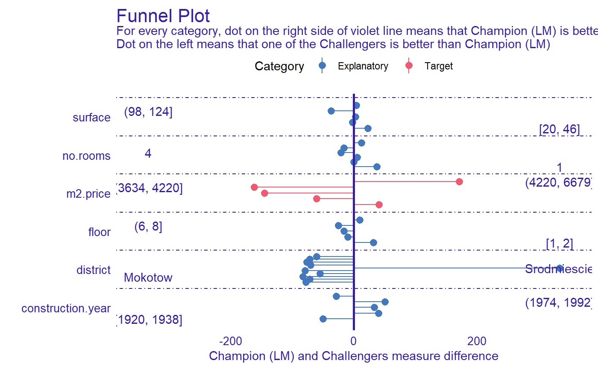

Function plot.funnel_measure creates funnel plot of differences in measures for two models across variable areas.
It uses data created with 'funnel_measure' function.
# S3 method for funnel_measure plot(x, ..., dot_size = 4)
| x | - funnel_measure object created with |
|---|---|
| ... | - other parameters |
| dot_size | - size of the dot on plots. Passed to |
ggplot object
library("mlr") library("DALEXtra") task <- mlr::makeRegrTask( id = "R", data = apartments, target = "m2.price" ) learner_lm <- mlr::makeLearner( "regr.lm" ) model_lm <- mlr::train(learner_lm, task) explainer_lm <- explain_mlr(model_lm, apartmentsTest, apartmentsTest$m2.price, label = "LM")#> Preparation of a new explainer is initiated #> -> model label : LM #> -> data : 9000 rows 6 cols #> -> target variable : 9000 values #> -> data : A column identical to the target variable `y` has been found in the `data`. ( WARNING ) #> -> data : It is highly recommended to pass `data` without the target variable column #> -> predict function : yhat.WrappedModel will be used ( default ) #> -> predicted values : numerical, min = 1792.597 , mean = 3506.836 , max = 6241.447 #> -> residual function : difference between y and yhat ( default ) #> -> residuals : numerical, min = -257.2555 , mean = 4.687686 , max = 472.356 #> -> model_info : model_info not specified, assuming type: regression ( default ) #> -> model_info : package: Model of class: WrappedModel package unrecognized Unknown ( default ) #> A new explainer has been created!learner_rf <- mlr::makeLearner( "regr.randomForest" ) model_rf <- mlr::train(learner_rf, task) explainer_rf <- explain_mlr(model_rf, apartmentsTest, apartmentsTest$m2.price, label = "RF")#> Preparation of a new explainer is initiated #> -> model label : RF #> -> data : 9000 rows 6 cols #> -> target variable : 9000 values #> -> data : A column identical to the target variable `y` has been found in the `data`. ( WARNING ) #> -> data : It is highly recommended to pass `data` without the target variable column #> -> predict function : yhat.WrappedModel will be used ( default ) #> -> predicted values : numerical, min = 2000.803 , mean = 3506.863 , max = 5842.896 #> -> residual function : difference between y and yhat ( default ) #> -> residuals : numerical, min = -737.4675 , mean = 4.660532 , max = 1328.424 #> -> model_info : model_info not specified, assuming type: regression ( default ) #> -> model_info : package: Model of class: WrappedModel package unrecognized Unknown ( default ) #> A new explainer has been created!learner_gbm <- mlr::makeLearner( "regr.gbm" ) model_gbm <- mlr::train(learner_gbm, task) explainer_gbm <- explain_mlr(model_gbm, apartmentsTest, apartmentsTest$m2.price, label = "GBM")#> Preparation of a new explainer is initiated #> -> model label : GBM #> -> data : 9000 rows 6 cols #> -> target variable : 9000 values #> -> data : A column identical to the target variable `y` has been found in the `data`. ( WARNING ) #> -> data : It is highly recommended to pass `data` without the target variable column #> -> predict function : yhat.WrappedModel will be used ( default ) #> -> predicted values : numerical, min = 2110.898 , mean = 3503.287 , max = 6059.802 #> -> residual function : difference between y and yhat ( default ) #> -> residuals : numerical, min = -564.5595 , mean = 8.236591 , max = 767.3272 #> -> model_info : model_info not specified, assuming type: regression ( default ) #> -> model_info : package: Model of class: WrappedModel package unrecognized Unknown ( default ) #> A new explainer has been created!plot_data <- funnel_measure(explainer_lm, list(explainer_rf, explainer_gbm), nbins = 5, measure_function = DALEX::loss_root_mean_square)#> | | | 0% | |============ | 17% | |======================= | 33% | |=================================== | 50% | |=============================================== | 67% | |========================================================== | 83% | |======================================================================| 100%plot(plot_data)